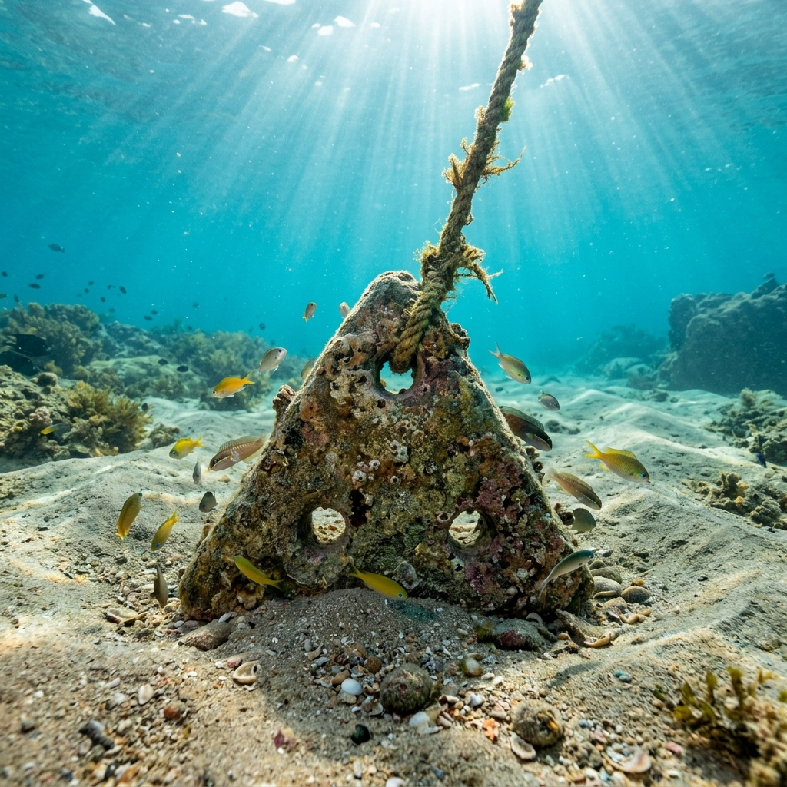

Mangalore Ancient Port Explorer
Step onto the shores where the Netravati and Gurupura rivers meet the Arabian Sea. Discover Mangalore — the ancient "Kudla" of the Tuluva coast, its centuries of maritime trade, the old Bunder harbour, and the modern port that still carries its name to the world.
A Port Named for the Goddess Mangaladevi
Mangalore (Mangaluru; Kudla in Tulu) grew around the temple of the goddess Mangaladevi, from which the city takes its name. Set at the estuary of the Netravati and Gurupura (Phalguni) rivers, its sheltered harbour made it one of the most dependable anchorages on India's southwest coast.
From antiquity, Arab, Persian, and Roman seafarers traded here, and the port remained an important outlet for the spice and forest wealth of the Western Ghats through the Vijayanagara and Keladi Nayaka eras, the rule of Hyder Ali and Tipu Sultan, and the British colonial period.
📜 Coastal Chronicles
- Mangaladevi's City: The town and port take their name from the ancient Mangaladevi temple.
- River Estuary: Sheltered anchorage where the Netravati and Gurupura rivers reach the Arabian Sea.
- Kudla: Known by this Tulu name meaning "confluence", reflecting its riverine geography.
Trade History of a Monsoon-Governed Harbour
Riding the trade winds, merchant fleets linked Mangalore to Arabia, East Africa, and the wider Indian Ocean for well over a millennium.
Ancient & Medieval Routes
Arab dhows and later European vessels called at the Bunder, exchanging West Asian goods for the spices, timber, and textiles of the Kanara hinterland.
Sultans & Forts
Under Hyder Ali and Tipu Sultan the port was fortified — Tipu's Sultan Battery still guards the old harbour mouth — and the 1784 Treaty of Mangalore was signed here.
From Bunder to Modern Port
After the British took the city in 1799, trade grew steadily; the deep-water New Mangalore Port, commissioned in 1974, made the city one of India's major ports.
🚢 Cargo Through the Ages
- Rice & Salt: Staple coastal cargoes shipped up and down the western seaboard.
- Pepper & Cardamom: Prized spices from the Ghats bound for Arabia and Europe.
- Sandalwood & Timber: Fragrant sandalwood and teak from interior forests.
- Coffee & Cashew: Modern mainstays — Mangalore remains a leading exporter of both.
- Seafood: The city's fishing industry feeds frozen fish exports across the globe.
Major Exports: Spices, Sandalwood, Coffee & Cashew
For centuries Mangalore's docks were stacked with sacks of black pepper, cardamom, and betel nut carried down from the Western Ghats, alongside salt and coir from the coast and sandalwood and teak from the interior forests. Arab merchants prized these cargoes, and later European trading companies vied for control of the port.
Today the same coastal advantage drives the modern economy: Mangalore is a leading global exporter of coffee and cashew, a major producer of fish and seafood, and the gateway for Karnataka's containerised cargo through the New Mangalore Port.
Chronology of Mangalore Port
From an ancient estuary anchorage to one of India's principal modern harbours.
Maritime Hub of the Tuluva Coast
The estuary port of Kudla/Mangalapuram trades with Arabian, Persian, and Roman merchants along Indian Ocean routes.
Regional & Vijayanagara Rule
Under the Alupas and later the Vijayanagara empire, Mangalore prospers as the chief port of the Kanara rice and spice country.
European & Keladi Presence
The Portuguese establish trading links, followed by Dutch and British merchants, while the Keladi Nayakas govern the coast.
Under the Mysore Sultans
Hyder Ali and Tipu Sultan fortify the port; Tipu builds the Sultan Battery, and the 1784 Treaty of Mangalore ends the Second Anglo-Mysore War.
British Colonial Port
After the British capture of Mangalore, the Bunder becomes a busy coaling and cargo station for the southwestern seaboard.
New Mangalore Port
The deep-water New Mangalore Port is commissioned, growing into a leading major port for coffee, cashew, seafood, and petroleum cargo.
The Estuary, Harbour, and Trading Legacy of Mangalore
Glimpses of the coast and cargoes that have defined Mangalore's maritime story.



📚 References & Further Reading
- Sturrock, J. (1894). South Canara District Manual. Madras Government Press.
- Campbell, James M. (1883). Gazetteer of the Bombay Presidency: Kanara, Vol XV, Part II. Government Central Press.
- Buchanan, Francis (1807). A Journey from Madras through the Countries of Mysore, Canara, and Malabar. East India Company.
- Karnataka State Gazetteer. Dakshina Kannada District Gazetteer. Government of Karnataka.
- New Mangalore Port Authority. Official port history and traffic statistics.